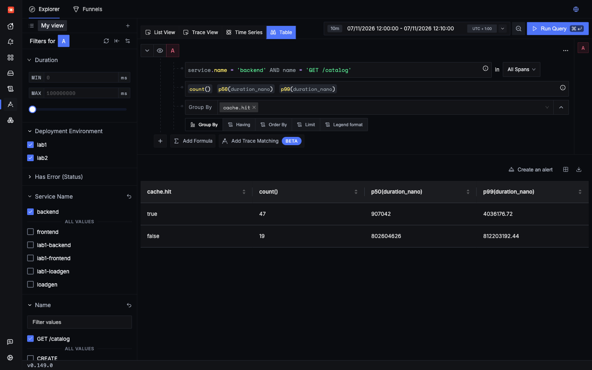
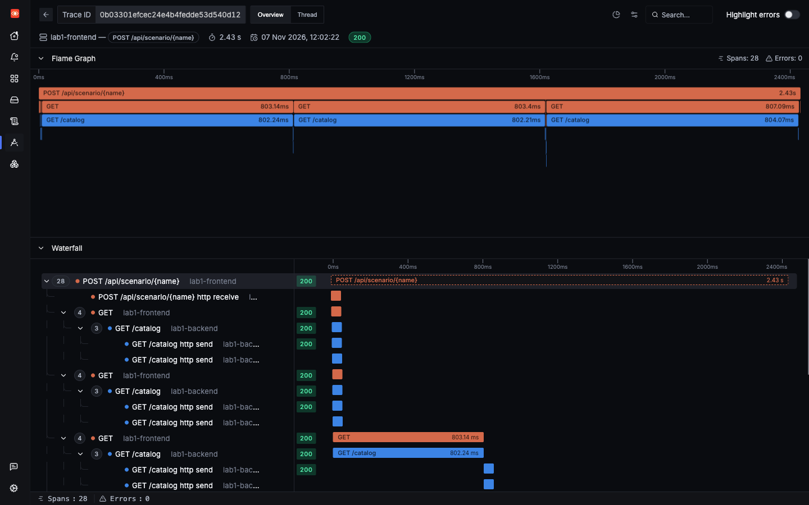
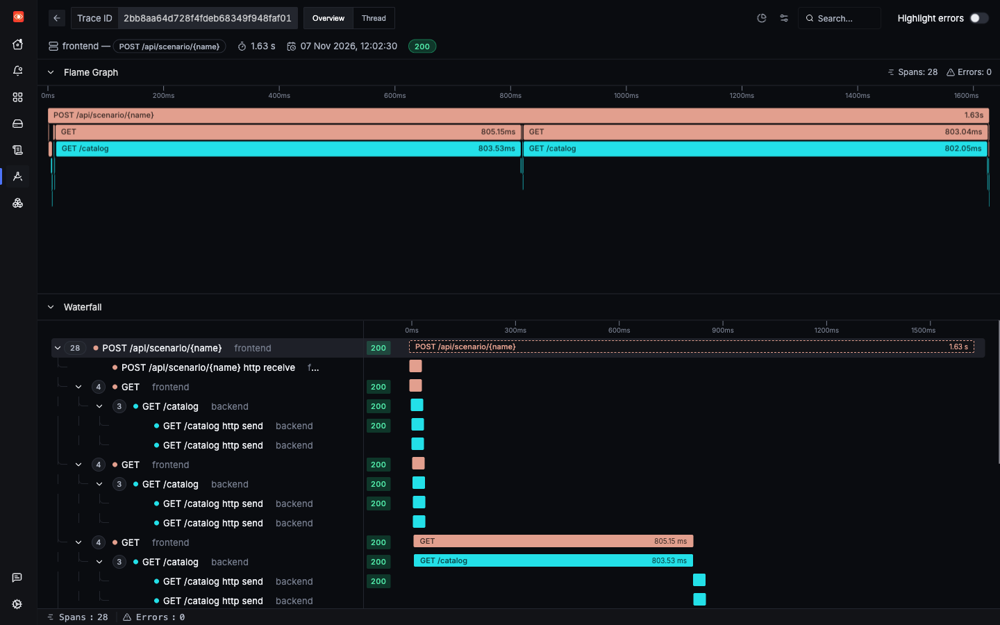
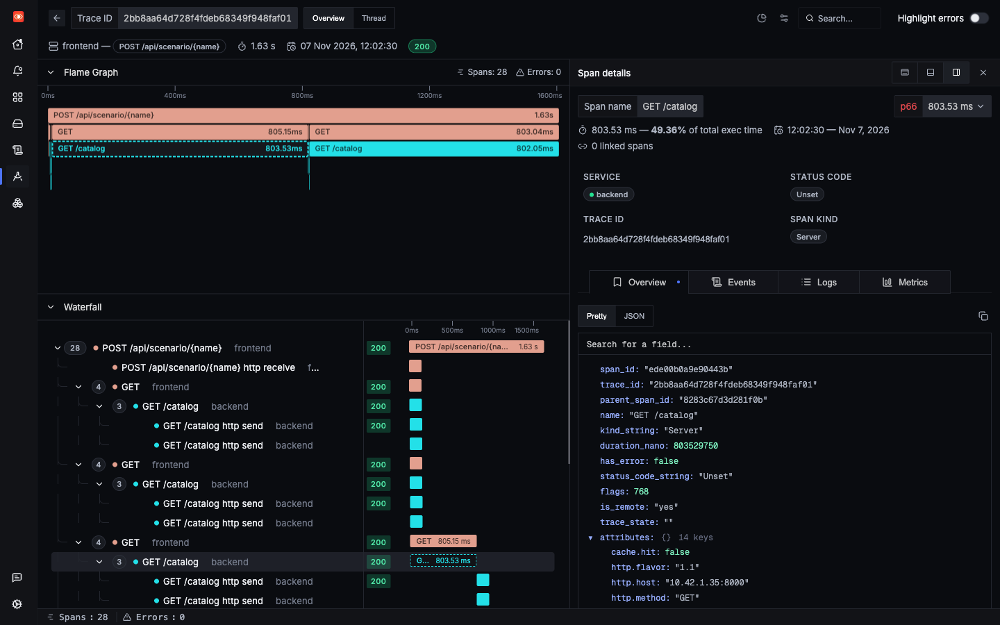

Lab 2: incident 3 of 4
Slow for no visible reason
The same request is sometimes instant and sometimes takes 800 ms, with nothing to tell the two apart. This dimension isn't about the business. It's technical, and it's something only your code can know: whether the cache had the answer.
1Trigger it
The cache_miss scenario makes six catalogue lookups. Each one has about a one in three chance of taking the slow path, so every run is different. Fire it in both labs a few times.
2Symptom
Nothing fails, but the response time jumps around. Saved runs took 2,437 ms in Lab 1 and 1,632 ms in Lab 2, for the same six lookups. Fire it again and you will get a different number.
3Where to look
Go to the spans for GET /catalog, and compare a fast one with a slow one.
4Search
Lab 1
Over the saved window there were 66 lookups, with a P50 of about 1 ms and a P99 of 803.5 ms. Nothing separates the two groups. They have the same route, the same status and no child spans.
This time the logs can't help either. The order stored line gave you a free dimension in the last two incidents, but this route writes no log at all. No backend log was stored during 20 runs of this scenario across the two labs ClickHouse SQL.
Lab 2
cache.hit is on the span the agent already made, so you can filter and group by it:

cache.hit. Seen in SigNoz UI Values are in nanoseconds: about 0.9 ms for a hit, and about 803 ms for a miss.It is also a metric, so you can follow the hit rate over time:
5Evidence
Lab 1

Lab 2


cache.hit: false is the first attribute on it.Over 10 runs in each lab, measured from stored spans:
| Group | Lookups | P50 | Max | Over 500 ms |
|---|---|---|---|---|
| Lab 1: all lookups | 60 | 0.9 ms | 803.2 ms | 22 |
Lab 2: cache.hit = true | 43 | 0.9 ms | 4.4 ms | 0 |
Lab 2: cache.hit = false | 17 | 802.6 ms | 813.6 ms | 17 |
Lab 1 gives you one blurred group. Lab 2 gives you two clear ones, and the question changes from "why is this slow?" to "why do we miss the cache a third of the time?"
6Root cause
labs/lab2-custom-dimensions/app/backend.py lines 132–140132@app.get("/catalog")
133def catalog(item: str) -> dict:
134 # Deliberate problem: about a third of lookups miss the cache and take the slow path.
135 hit = random.random() >= 0.33
136 if not hit:
137 time.sleep(0.8)
138 trace.get_current_span().set_attribute("cache.hit", hit)
139 cache_lookups.add(1, {"cache.hit": hit})
140 return {"item": item, "price": PRICES.get(item, 5.0)}About a third of lookups take the slow path. It stands in for a cache that is too small, or that expires too soon. The two new lines that matter are set_attribute and cache_lookups.add. The first puts the answer on the span, and the second makes it a trend.
7Resolution
The fix depends on why the cache misses. In a real app you would look at its size, its expiry time, and what fills it. Here it is a random number, so the simplest change is to make misses rarer, then watch the hit rate on the metric:
- hit = random.random() >= 0.33+ hit = random.random() >= 0.05Check yourself: Why is cache.hit a job for your code rather than the agent?
Check yourself: Why could the log trick from the last two incidents not solve this one?